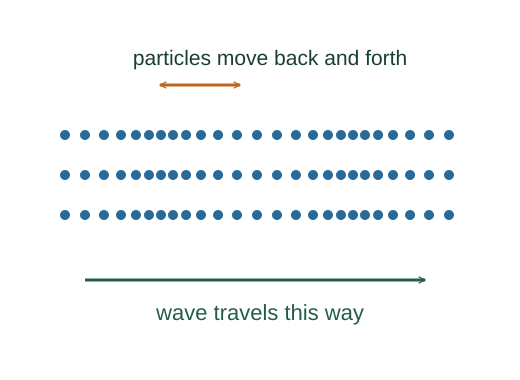
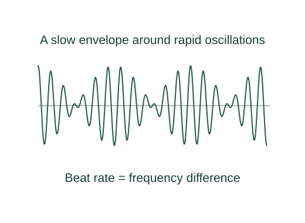
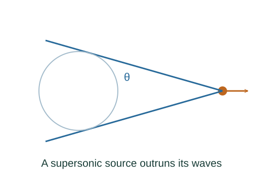

Derive sound intensity, pipe modes, beats and Mach angle
For displacement s = sm cos(kx − ωt), pressure change is −B∂s/∂x. With B = ρv² and k = ω/v this sets the pressure amplitude.
What the symbols mean
sm: displacement amplitude; B: bulk modulus; ρ: density; v: sound speed; L: pipe length; vs: supersonic source speed.
When this applies
Linear plane sound, ideal pipe boundaries without end correction, coherent waves for beats, and uniform sound speed for Mach geometry.
Developing the argument

Differentiate compression
For displacement s = sm cos(kx − ωt), pressure change is −B∂s/∂x. With B = ρv² and k = ω/v this sets the pressure amplitude.
Average pressure times particle velocity
Local particle velocity is ∂s/∂t = ωsm sin(phase). The power per area is their product, whose sine squared averages to ½.
Spread conserved power over a sphere
An isotropic lossless source delivers the same total power through every surrounding sphere. Divide that power by area 4πr².
Enforce pipe boundary conditions
Open ends are approximate pressure nodes (displacement antinodes), while a closed end is a displacement node. Two open ends fit n half wavelengths; unlike ends fit odd quarter wavelengths.
Translate path difference into phase
Every wavelength advances phase by 2π. Two initially in-phase equal waves reinforce for integer-wavelength path differences and cancel for half-integer differences.
Add close frequencies
The cosine sum identity gives a rapidly oscillating carrier times a slow envelope. Consecutive envelope magnitudes repeat at the absolute frequency difference.

Construct the Mach cone
After time t the source advances vst while an earlier wavefront has radius vt. Their tangent cone has half-angle satisfying opposite over hypotenuse.

A worked example
Two tones at 440 and 444 Hz beat four times per second. For a source at Mach 2, the cone half-angle is 30°.
Derivation behind this calculation ↗A point to keep straight
The decibel expression β ≡ 10log₁₀(I/I₀) is a definition of a level, not another propagation law.
Check the assumptions and derivation ↗